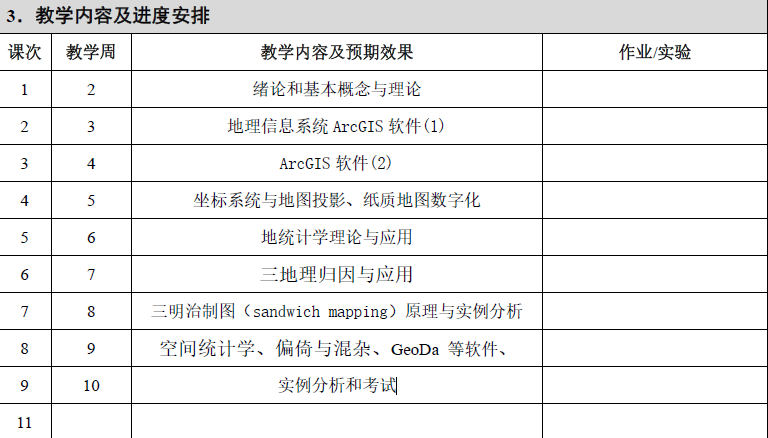

2026春 · PHPM60043.01 · 周艺彪、胡艺
来源：复旦教务系统教学大纲，本轮使用已授权账号下载。原始正文与考核信息；去除联系方式和网页脚本，内嵌图片按原字节去重保存。
本课程面向公共卫生数据的空间分析需求，系统介绍GIS基本概念与理论、坐标系统与地图投影、地图数字化与空间数据处理；结合ArcGIS与GeoDa开展上机实践，学习地统计学、空间统计学（含偏倚与混杂）及三明治制图等方法，并通过案例训练提升疾病空间制图与分析能力。
This course introduces the fundamentals of Geographic Information Systems (GIS) for public health, covering core concepts and theory, coordinate systems and map projections, map digitization, and spatial data processing. Hands-on lab sessions use ArcGIS and GeoDa to build practical skills in disease mapping and spatial analysis. Students will also learn key methods in geostatistics and spatial statistics (including bias and confounding) and apply “sandwich mapping” through real-world case studies and in-class exercises.
使学生熟练掌握地理信息系统、遥感、全球定位系统、空间流行病学、空间统计学的基本概念与理论，熟练使用ArcGIS、GeoDa 等软件。了解3S技术在疾病防制中的作用和应用，到达提高学生探索分析人群疾病和健康的空间分布规律及其分布与地理环境因素关系的能力，激发他们探索如何让环境发展与人类健康平衡的兴趣，开拓他们如何研究利用、改造和保护环境来促进人类健康的视野。
本课程采用“理论讲授+案例驱动+上机实践+问题导向讨论”相结合的教学方式。首先，通过系统化课堂讲授构建GIS与空间流行病学的理论框架，强化核心概念与方法原理理解；其次，引入真实公共卫生数据与典型疾病案例开展案例教学，增强知识的情境应用能力；再次，设置ArcGIS、GeoDa等软件上机实训环节，实施分步骤操作指导与分组协作练习，提升学生空间数据处理与建模能力；同时，通过问题导向式课堂讨论与小型研究设计任务，训练学生独立思考与科研表达能力；期末采用课程项目汇报形式，强化综合分析与实践转化能力，实现价值引领、知识掌握与能力提升的有机统一。
教学安排如下：

无
| 项目 | 比例 | 评定说明 |
|---|---|---|
| 出勤Attendance | 10.0% | 缺课1次扣2分，直到扣完为止 |
| 课堂表现Participation | 20.0% | 能认真回答问题并紧跟老师的思路为课堂表现好，分3个等级：差 10分；中等 15分； 好：20分 |
| 作业/实验/实践Assignment | 70.0% | 考试分数 |